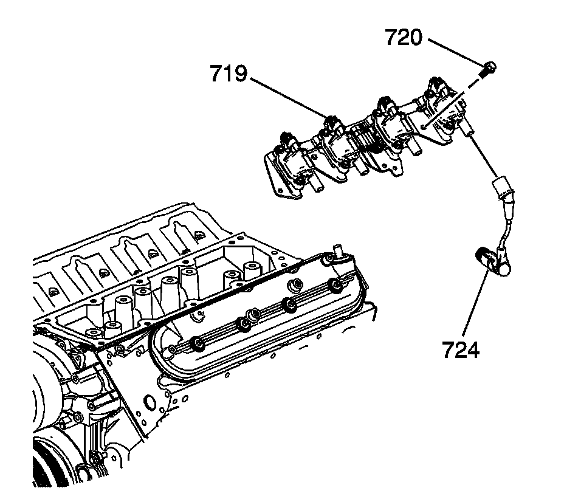
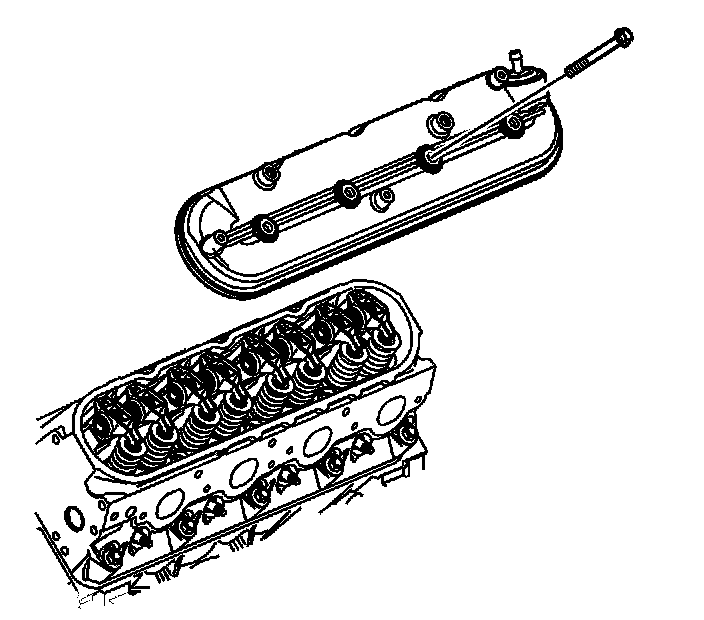

15. Valve Rocker Arm Cover Removal - Left Side
Valve Rocker Arm Cover Removal - Left Side

1. Remove the spark plug wires (724).
2. Remove the ignition coil bracket studs (720).
3. Remove the ignition coil and bracket assembly (719).

4. Disconnect the ignition coil electrical connectors.
5. Remove the bolts (723), coils (722), and wire harness (721) from the bracket (719), as required.

6. Remove the valve rocker arm cover bolts and cover.

7. Remove the gasket (504) from the cover.